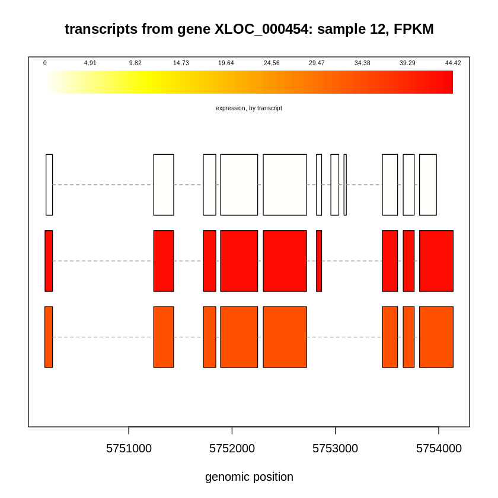
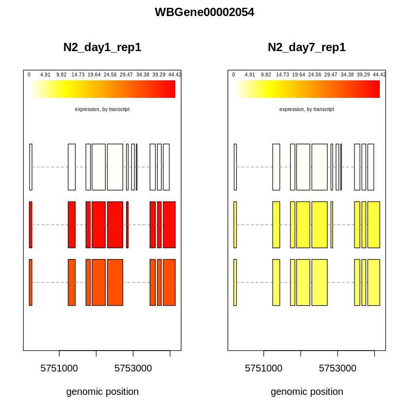
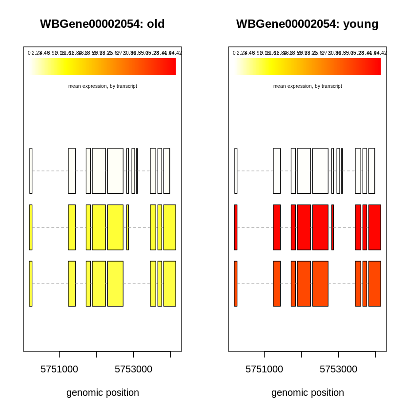

Isoform-level differential expression analysis with Ballgown.
Install R package
if (!require("BiocManager", quietly = TRUE))
install.packages("BiocManager")
BiocManager::install("ballgown")
Installing package into ‘/usr/local/lib/R/site-library’
(as ‘lib’ is unspecified)
'getOption("repos")' replaces Bioconductor standard repositories, see
'help("repositories", package = "BiocManager")' for details.
Replacement repositories:
CRAN: https://cran.rstudio.com
Bioconductor version 3.19 (BiocManager 1.30.25), R 4.4.1 (2024-06-14)
Installing package(s) 'BiocVersion', 'ballgown'
also installing the dependencies ‘plogr’, ‘png’, ‘formatR’, ‘abind’, ‘SparseArray’, ‘RSQLite’, ‘KEGGREST’, ‘lambda.r’, ‘futile.options’, ‘S4Arrays’, ‘DelayedArray’, ‘MatrixGenerics’, ‘AnnotationDbi’, ‘annotate’, ‘futile.logger’, ‘snow’, ‘BH’, ‘locfit’, ‘bitops’, ‘Rhtslib’, ‘SummarizedExperiment’, ‘RCurl’, ‘rjson’, ‘BiocGenerics’, ‘XVector’, ‘genefilter’, ‘BiocParallel’, ‘matrixStats’, ‘edgeR’, ‘statmod’, ‘XML’, ‘Biostrings’, ‘zlibbioc’, ‘Rsamtools’, ‘GenomicAlignments’, ‘BiocIO’, ‘restfulr’, ‘UCSC.utils’, ‘GenomeInfoDbData’, ‘GenomicRanges’, ‘IRanges’, ‘S4Vectors’, ‘sva’, ‘limma’, ‘rtracklayer’, ‘Biobase’, ‘GenomeInfoDb’
Old packages: 'gtable'
library(ballgown)
Attaching package: ‘ballgown’
The following object is masked from ‘package:base’:
structure
Please upload your data generated by `tablemaker. Please refer to the section Running Tablemaker the link here for details.
You can also download a copy from the path below:
/scratch/zt1/project/bioi611/shared/output/bulkRNA_SE_tablemaker.tar.gz
Or you can download a copy via the link below:
https://umd0-my.sharepoint.com/:u:/g/personal/xie186_umd_edu/EYLz8khnMeRCmyK_YFDDXaQBP_4hzpAgs_nN-TNXghdQMQ?e=5By9ct
getwd()
'/content'
system("tar zxvf bulkRNA_SE_tablemaker.tar.gz")
data_directory = file.path(getwd(), "bulkRNA_SE_tablemaker")
data_directory
'/content/bulkRNA_SE_tablemaker'
# make the ballgown object:
bg = ballgown(dataDir = data_directory, samplePattern='N2_day', meas='all')
bg
Mon Oct 28 10:28:23 2024
Mon Oct 28 10:28:23 2024: Reading linking tables
Mon Oct 28 10:28:24 2024: Reading intron data files
Mon Oct 28 10:28:27 2024: Merging intron data
Mon Oct 28 10:28:27 2024: Reading exon data files
Mon Oct 28 10:28:33 2024: Merging exon data
Mon Oct 28 10:28:34 2024: Reading transcript data files
Mon Oct 28 10:28:38 2024: Merging transcript data
Wrapping up the results
Mon Oct 28 10:28:38 2024
ballgown instance with 60032 transcripts and 6 samples
Accessing assembly data
A ballgown object has six slots: structure, expr, indexes, dirs, mergedDate, and meas.
Exon, intron, and transcript structures are easily extracted from the main ballgown object:
structure(bg)$exon
GRanges object with 178766 ranges and 2 metadata columns:
seqnames ranges strand | id transcripts
<Rle> <IRanges> <Rle> | <integer> <character>
[1] I 3747-3909 - | 1 1
[2] I 4116-4358 - | 2 2
[3] I 5195-5296 - | 3 2
[4] I 6037-6327 - | 4 2
[5] I 9727-9846 - | 5 2
... ... ... ... . ... ...
[178762] MtDNA 10348-10401 + | 178762 60028
[178763] MtDNA 10403-11354 + | 178763 60029
[178764] MtDNA 11356-11691 + | 178764 60030
[178765] MtDNA 11691-13272 + | 178765 60031
[178766] MtDNA 13275-13327 + | 178766 60032
-------
seqinfo: 7 sequences from an unspecified genome; no seqlengths
structure(bg)$intron
GRanges object with 116284 ranges and 2 metadata columns:
seqnames ranges strand | id transcripts
<Rle> <IRanges> <Rle> | <integer> <character>
[1] I 4359-5194 - | 1 2
[2] I 5297-6036 - | 2 2
[3] I 6328-9726 - | 3 2
[4] I 9847-10094 - | 4 2
[5] I 11562-11617 + | 5 3:4
... ... ... ... . ... ...
[116280] X 17715112-17716973 + | 116280 59995:59996
[116281] X 17717088-17717170 + | 116281 59995:59996
[116282] X 17717279-17717327 + | 116282 59995:59996
[116283] X 17717444-17718427 + | 116283 59995
[116284] X 17717444-17718434 + | 116284 59996
-------
seqinfo: 6 sequences from an unspecified genome; no seqlengths
structure(bg)$trans
GRangesList object of length 60032:
$`1`
GRanges object with 1 range and 2 metadata columns:
seqnames ranges strand | id transcripts
<Rle> <IRanges> <Rle> | <integer> <character>
[1] I 3747-3909 - | 1 1
-------
seqinfo: 7 sequences from an unspecified genome; no seqlengths
$`2`
GRanges object with 5 ranges and 2 metadata columns:
seqnames ranges strand | id transcripts
<Rle> <IRanges> <Rle> | <integer> <character>
[1] I 4116-4358 - | 2 2
[2] I 5195-5296 - | 3 2
[3] I 6037-6327 - | 4 2
[4] I 9727-9846 - | 5 2
[5] I 10095-10230 - | 6 2
-------
seqinfo: 7 sequences from an unspecified genome; no seqlengths
$`3`
GRanges object with 5 ranges and 2 metadata columns:
seqnames ranges strand | id transcripts
<Rle> <IRanges> <Rle> | <integer> <character>
[1] I 11495-11561 + | 7 3:4
[2] I 11618-11689 + | 8 3:5
[3] I 14951-15160 + | 9 3:5
[4] I 16473-16585 + | 10 c(3, 6)
[5] I 16702-16793 + | 11 3
-------
seqinfo: 7 sequences from an unspecified genome; no seqlengths
...
<60029 more elements>
expr
The expr slot is a list that contains tables of expression data for the genomic features. These tables are very similar to the *_data.ctab Tablemaker output files. Ballgown implements the following syntax to access components of the expr slot:
*expr(ballgown_object_name, <EXPRESSION_MEASUREMENT>)
where * is either e for exon, i for intron, t for transcript, or g for gene, and is an expression-measurement column name from the appropriate .ctab file. Gene-level measurements are calculated by aggregating the transcript-level measurements for that gene. All of the following are valid ways to extract expression data from the bg ballgown object:
transcript_fpkm = texpr(bg, 'FPKM')
transcript_cov = texpr(bg, 'cov')
whole_tx_table = texpr(bg, 'all')
exon_mcov = eexpr(bg, 'mcov')
junction_rcount = iexpr(bg)
whole_intron_table = iexpr(bg, 'all')
gene_expression = gexpr(bg)
Warning message in .normarg_f(f, x):
“'NROW(x)' is not a multiple of split factor length”
Warning message in tlengths * tmeas:
“longer object length is not a multiple of shorter object length”
Indexes
sampleNames(bg)
- 'N2_day1_rep1'
- 'N2_day1_rep2'
- 'N2_day1_rep3'
- 'N2_day7_rep1'
- 'N2_day7_rep2'
- 'N2_day7_rep3'
pData(bg) = data.frame(id=sampleNames(bg), group=rep(c("young","old"), each=3))
pData(bg)
| id | group |
|---|---|
| <chr> | <chr> |
| N2_day1_rep1 | young |
| N2_day1_rep2 | young |
| N2_day1_rep3 | young |
| N2_day7_rep1 | old |
| N2_day7_rep2 | old |
| N2_day7_rep3 | old |
Plotting transcript structures
plotTranscripts(gene='WBGene00002054', gown=bg, samples='N2_day1_rep1',
meas='FPKM', colorby='transcript',
main='transcripts from gene XLOC_000454: sample 12, FPKM')

It is also possible to plot several samples at once:
plotTranscripts('WBGene00002054', bg,
samples=c('N2_day1_rep1', 'N2_day7_rep1'),
meas='FPKM', colorby='transcript')

You can also make side-by-side plots comparing mean abundances between groups (here, 0 and 1):
plotMeans('WBGene00002054', bg, groupvar='group', meas='FPKM', colorby='transcript')

Differential expression analysis
Ballgown provides a wide selection of simple, fast statistical methods for testing whether transcripts are differentially expressed between experimental conditions or across a continuous covariate (such as time).
stat_results = stattest(bg, feature='transcript',
meas='FPKM', covariate='group',
getFC=TRUE)
results_transcripts <- data.frame(geneNames = geneNames(bg),
geneIDs = geneIDs(bg),
transcriptNames = transcriptNames(bg),
stat_results)
head(results_transcripts)
| geneNames | geneIDs | transcriptNames | feature | id | fc | pval | qval | |
|---|---|---|---|---|---|---|---|---|
| <chr> | <chr> | <chr> | <chr> | <chr> | <dbl> | <dbl> | <dbl> | |
| 1 | Y74C9A.6 | WBGene00023193 | Y74C9A.6 | transcript | 1 | 0.3087935 | 0.313759448 | 0.52196762 |
| 2 | homt-1 | WBGene00022277 | Y74C9A.3.1 | transcript | 2 | 0.6960674 | 0.006886113 | 0.08724496 |
| 3 | nlp-40 | WBGene00022276 | Y74C9A.2a.3 | transcript | 3 | 0.9999961 | 0.948535319 | 0.96924051 |
| 4 | nlp-40 | WBGene00022276 | Y74C9A.2a.1 | transcript | 4 | 0.4248382 | 0.040862773 | 0.16836530 |
| 5 | nlp-40 | WBGene00022276 | Y74C9A.2a.2 | transcript | 5 | 4.8007011 | 0.050336942 | 0.18664213 |
| 6 | nlp-40 | WBGene00022276 | Y74C9A.2b.1 | transcript | 6 | 0.6299300 | 0.112477785 | 0.29368625 |
results_transcripts <- results_transcripts[order(results_transcripts$qval), ]
head(results_transcripts, 10)
| geneNames | geneIDs | transcriptNames | feature | id | fc | pval | qval | |
|---|---|---|---|---|---|---|---|---|
| <chr> | <chr> | <chr> | <chr> | <chr> | <dbl> | <dbl> | <dbl> | |
| 1940 | F48C1.8 | WBGene00018600 | F48C1.8.1 | transcript | 1940 | 2.1012606 | 5.213184e-06 | 0.01647351 |
| 3643 | F32H2.15 | WBGene00284858 | F32H2.15 | transcript | 3643 | 0.1912040 | 1.087705e-06 | 0.01647351 |
| 3811 | lin-41 | WBGene00003026 | C12C8.3a.1 | transcript | 3811 | 12.1472453 | 2.940965e-06 | 0.01647351 |
| 6887 | WBGene00044425 | F54D12.11 | transcript | 6887 | 0.8775027 | 7.411872e-06 | 0.01647351 | |
| 8957 | ifb-2 | WBGene00002054 | F10C1.7a.1 | transcript | 8957 | 4.5625027 | 1.180041e-06 | 0.01647351 |
| 20015 | Y69A2AR.28 | WBGene00022099 | Y69A2AR.28.1 | transcript | 20015 | 0.6076403 | 7.905547e-06 | 0.01647351 |
| 20798 | str-185 | WBGene00006228 | R08C7.7.1 | transcript | 20798 | 0.9668631 | 8.516315e-06 | 0.01647351 |
| 23441 | unc-44 | WBGene00006780 | B0350.2a.1 | transcript | 23441 | 3.3319026 | 5.919439e-06 | 0.01647351 |
| 25280 | plp-1 | WBGene00004046 | F45E4.2.1 | transcript | 25280 | 0.7053267 | 7.087841e-06 | 0.01647351 |
| 25710 | WBGene00023488 | T26A8.5 | transcript | 25710 | 0.9632862 | 8.470675e-06 | 0.01647351 |
results_transcripts[results_transcripts$geneIDs == "WBGene00002054", ]
| geneNames | geneIDs | transcriptNames | feature | id | fc | pval | qval | |
|---|---|---|---|---|---|---|---|---|
| <chr> | <chr> | <chr> | <chr> | <chr> | <dbl> | <dbl> | <dbl> | |
| 8957 | ifb-2 | WBGene00002054 | F10C1.7a.1 | transcript | 8957 | 4.562503 | 1.180041e-06 | 0.01647351 |
| 8956 | ifb-2 | WBGene00002054 | F10C1.7c.1 | transcript | 8956 | 3.554543 | 3.838807e-04 | 0.04612121 |
| 8958 | ifb-2 | WBGene00002054 | F10C1.7e.1 | transcript | 8958 | 1.009672 | 8.838138e-01 | 0.93058010 |
plotMeans('WBGene00002054', bg, groupvar='group', meas='FPKM', colorby='transcript')
write.csv(results_transcripts,
file = "BIOI611_bulkRNA_SE_ballgown.csv",
row.names = FALSE)
sessionInfo()
R version 4.4.1 (2024-06-14)
Platform: x86_64-pc-linux-gnu
Running under: Ubuntu 22.04.3 LTS
Matrix products: default
BLAS: /usr/lib/x86_64-linux-gnu/openblas-pthread/libblas.so.3
LAPACK: /usr/lib/x86_64-linux-gnu/openblas-pthread/libopenblasp-r0.3.20.so; LAPACK version 3.10.0
locale:
[1] LC_CTYPE=en_US.UTF-8 LC_NUMERIC=C
[3] LC_TIME=en_US.UTF-8 LC_COLLATE=en_US.UTF-8
[5] LC_MONETARY=en_US.UTF-8 LC_MESSAGES=en_US.UTF-8
[7] LC_PAPER=en_US.UTF-8 LC_NAME=C
[9] LC_ADDRESS=C LC_TELEPHONE=C
[11] LC_MEASUREMENT=en_US.UTF-8 LC_IDENTIFICATION=C
time zone: Etc/UTC
tzcode source: system (glibc)
attached base packages:
[1] stats graphics grDevices utils datasets methods base
other attached packages:
[1] ballgown_2.36.0
loaded via a namespace (and not attached):
[1] IRdisplay_1.1 blob_1.2.4
[3] Biostrings_2.72.1 bitops_1.0-9
[5] fastmap_1.2.0 RCurl_1.98-1.16
[7] GenomicAlignments_1.40.0 XML_3.99-0.17
[9] digest_0.6.37 lifecycle_1.0.4
[11] survival_3.7-0 statmod_1.5.0
[13] KEGGREST_1.44.1 RSQLite_2.3.7
[15] genefilter_1.86.0 compiler_4.4.1
[17] rlang_1.1.4 tools_4.4.1
[19] utf8_1.2.4 yaml_2.3.10
[21] rtracklayer_1.64.0 S4Arrays_1.4.1
[23] bit_4.5.0 curl_5.2.3
[25] DelayedArray_0.30.1 repr_1.1.7
[27] RColorBrewer_1.1-3 abind_1.4-8
[29] BiocParallel_1.38.0 pbdZMQ_0.3-13
[31] BiocGenerics_0.50.0 grid_4.4.1
[33] stats4_4.4.1 fansi_1.0.6
[35] xtable_1.8-4 edgeR_4.2.2
[37] SummarizedExperiment_1.34.0 cli_3.6.3
[39] crayon_1.5.3 httr_1.4.7
[41] rjson_0.2.23 DBI_1.2.3
[43] cachem_1.1.0 zlibbioc_1.50.0
[45] splines_4.4.1 parallel_4.4.1
[47] AnnotationDbi_1.66.0 BiocManager_1.30.25
[49] XVector_0.44.0 restfulr_0.0.15
[51] matrixStats_1.4.1 base64enc_0.1-3
[53] vctrs_0.6.5 Matrix_1.7-1
[55] jsonlite_1.8.9 sva_3.52.0
[57] IRanges_2.38.1 S4Vectors_0.42.1
[59] bit64_4.5.2 locfit_1.5-9.10
[61] limma_3.60.6 annotate_1.82.0
[63] glue_1.8.0 codetools_0.2-20
[65] GenomeInfoDb_1.40.1 BiocIO_1.14.0
[67] GenomicRanges_1.56.2 UCSC.utils_1.0.0
[69] pillar_1.9.0 htmltools_0.5.8.1
[71] IRkernel_1.3.2 GenomeInfoDbData_1.2.12
[73] R6_2.5.1 evaluate_1.0.1
[75] lattice_0.22-6 Biobase_2.64.0
[77] png_0.1-8 Rsamtools_2.20.0
[79] memoise_2.0.1 Rcpp_1.0.13
[81] uuid_1.2-1 SparseArray_1.4.8
[83] nlme_3.1-166 mgcv_1.9-1
[85] MatrixGenerics_1.16.0
Reference
https://www.bioconductor.org/packages/release/bioc/vignettes/ballgown/inst/doc/ballgown.html